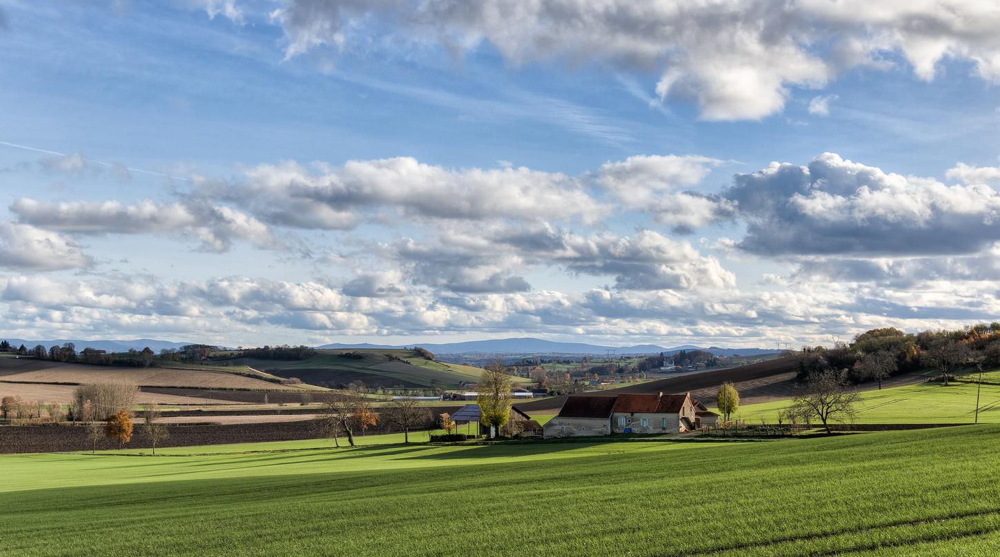

Le Puy-de-Dôme tient son nom du volcan endormi qui se trouve dans ce département. Son chef-lieu est Clermont-Ferrand. Découvrez la nature volcanique du Puy-de-Dôme en entreprenant une randonnée à pied, à vélo ou encore à cheval à travers les différents circuits. Vous pourrez même voir la fameuse source Volvic. Après votre excursion, requinquez vous autour d’une fourme d’Ambert, un steak charolais ou une pachade.
La Loire
La Loire doit son nom au fleuve qui le traverse du sud au nord sur plus de 100 km. Son chef-lieu est Saint-Étienne. Forêts, étangs, tourbières, vallées et pitons basaltiques font partie des richesses naturelles de la Loire. Parmi le top 3 des lieux les plus visités figurent l’espace zoologique de Saint-Martin-la-Plaine, le Château de Bouthéon et le Musée de la mine de Saint-Étienne.
Le Cantal
Le département du Cantal doit son nom au massif volcanique qu’il abrite. Son chef-lieu est Aurillac où se déroule le festival international de théâtre de rue. Le lieu le plus visité du département est le puy de Dôme, un volcan en sommeil de la chaîne des Puys.
L'Ardèche
L’Ardèche doit son nom à la rivière qui traverse ce département. Il correspond à l’ancienne province du Vivarais. Son chef-lieu est Privas. L’Ardèche regorge de milieux naturels à admirer; des vallées, les grottes de Chauvet et de l’Aven d’Orgnac, les lacs d’Issarlès et du Ternay, les gorges du Chassezac, Vallon-Pont-d’Arc… Vous trouverez par ailleurs des châteaux et des ponts.
L'Allier
Allier, du nom d’une des rivières qui traverse le département, correspond pour l’essentiel à l’ancienne province du Bourbonnais. Son chef-lieu est Moulins. Vous y trouverez la montagne bourbonnaise, le bocage bourbonnais et la forêt de Tronçais. Vous pourrez aussi visiter de multiples châteaux, des églises romanes mais l’un des secteurs phares d’Allier est la station thermale internationale de Vichy.

L'Ain
L’Ain est caractérisé par la dualité de son relief : la rivière homonyme le traversent du nord au sud et le massif du Jura. La diversité de l’environnement est importante : reliefs, campagnes, rivages des lacs, fleuves ou rivières, canyons. La surprise et l'émerveillement sont totales. Comme pour la Savoie, l’Ain propose des activités pendant toute l’année, de la randonnée, au piste de ski passant par des balades sur des bateaux de plaisance.
Le Drôme
Le département du Drôme est très étendu et possède un relief insolite. Le Drôme des collines au nord, le Vercors à l’est (parc naturel), la vallée du Drôme et la Drôme provençale. Le paysage alterne entre le caractère verdoyant des montagnes, les falaises et la beauté éclatante des champs de lavande.
La Haute-Loire
La Haute-Loire est en amont du plus long fleuve de France, la Loire. Elle a une altitude moyenne forte de 800 mètres l’altitude. Son chef-lieu est le Puy-en-Velay où vous pourrez admirer la cathédrale Notre-Dame-de-l’Annonciation classée au Patrimoine Mondial de l’humanité par l’UNESCO. C’est dans ce département que se trouve quatre villages classés parmi les plus beaux de France, à savoir, Blesle, Lavaudieu, Arlempdes et Pradelles.
La Haute-Savoie
La Haute-Savoie, département de l’Auvergne-Rhône-Alpes, propose de nombreuse activité touristique à pratiquer en été comme en hiver. Notamment grâce à ses lacs (lac Léman et lac d’Annecy), ses montagnes (massif du Mont-Blanc) et ses nombreuses stations de ski.
Le lac Léman est le plus grand lac alpin d’Europe centrale et partage ses rivages avec la Suisse, le rivage nord, et la France, le rivage Sud. Des navettes permettent la traversée du lac et de profiter du paysage exceptionnel des Alpes.
Le Mont-Blanc est le point culminant de la chaînes des Alpes, de nombreux itinéraires permettent de le gravir de nos jours avec une préparation sérieuse.
L'Isère
La région de l’Auvergne-Rhône-Alpes est caractérisée par de fort contraste dans le paysage. L’Isère ne déroge pas à la règle. Ce département, à cheval sur les Alpes et la plaine du Rhône, alterne entre plaines, massifs montagneux, vallées, lacs, et fleuves (le Rhône). L’Isère est aussi réputée pour ses villes au riche héritage, telles que Vienne, Grenoble et Crémieu, ses villages typiques, ses stations de ski, sa gastronome ou encore ses traditions.
Le Rhône
Haut lieu de la gastronomie, le département du Rhône est aussi une terre d’histoire et de traditions. Lyon et son merveilleux patrimoine architectural, Saint-Romain-en-Gal est ses vestiges gallo-romains, le pays Beaujolais et ses charmants villages dorés, la nature préservée des monts du Lyonnais ainsi que les fameux vignobles.
La Savoie
La Savoie, limitrophe de la Haute-Savoie, possède de nombreux point commun avec ce département. La Savoie saura satisfaire les amoureux de la montagne et des sports alpins. Le département est célèbre par le monde, pour ses nombreuses stations de ski et un domaine skiable d’une richesse difficilement égalable. La Savoie possède également de nombreux sentiers praticables à pieds ou en VTT en été.